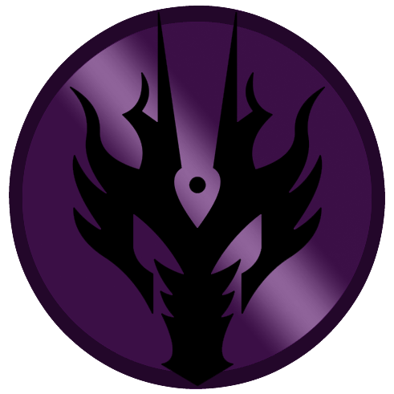

Seid gegrüßt!
Ich bin Sonja und online meist unter dem Pseudonym Nimitya zu finden. Im Rahmen einer kleinen Projektarbeit habe ich diese Seite mit HTML und CSS komplett selbst erstellt und auch den Inhalt verfasst. Ich möchte hiermit ein Hobby von mir vorstellen, was mich nun schon über zwölf Jahre begleitet und es in eine kleine Übersicht packen. Auf dieser Seite werdet ihr ein paar grundlegende Informationen zu diesem Hobby finden und spezifische Details von meinem Mitwirken in diesem.
Aber worum geht es eigentlich?
Vielleicht habt ihr es schon im oberen Bereich der Seite erkannt und wenn nicht, lernt ihr es nun kennen. Mein Hobby dreht sich grundlegend zunächst um das weltweit bekannte Franchise „Star Wars“. Die meisten von euch werden die Filme kennen oder zumindest von ihnen gehört haben. Zudem wurden in den letzten Jahren auch viele neue Serien veröffentlicht, welche zeitlich die Abschnitte zwischen oder während den neun Filmen der „Skywalker Saga“ behandeln. Darüber hinaus gibt es jedoch auch weitere Medien, in denen Star Wars bereits seit dem Ende der 70er Jahre – also dem Start der ersten Trilogie – vertreten ist. Es wurden hunderte Bücher veröffentlicht, welche im Star Wars Universum spielen und ebenso zahlreiche Comics. Dabei werden auch Zeiträume Tausende Jahren vor den Filmen, wie auch danach behandelt. Hinzu kommen dann auch verschiedene Computer und Konsolen Spiele, in denen es sich um Star Wars dreht. Und genau dort befinden wir uns nun:
Star Wars: the old Republic (kurz SWtoR) ist ein MMORPG (Massively Multiplayer Online Role-Playing Game). Also ein Computerspiel in welchem man seine Abenteuer mit einem selbst gestalteten Charakter erleben kann und dabei entweder allein die Geschichte der zahlreichen Planeten im Star Wars Universum erkundet oder dies in Gruppen mit anderen realen Spielern und deren Charakteren tun kann. Dieses Computerspiel biete die visuelle Grundlage für mein Hobby: Das Online-Rollenspiel (kurz RP).
Zeitlich spielt SWtoR, wie der Name schon sagt, in der alten Republik und ist damit über 3600 Jahre vor der Original-Trilogie (also Episode IV) angesiedelt. Eine Zeit, in der die Galaxie noch nicht komplett erkundet war und es noch zahlreiche Jedi, wie auch Sith gibt. In dem Spiel hat man die Möglichkeit, seinen Charakter auf Seiten der Republik oder auch des Imperiums zu spielen. Ich habe mich damals mit meinem Freundeskreis entschieden, die Dunkle Seite der Macht genauer zu ergründen. Entsprechend findet mein RP im Imperium, genauer gesagt unter den Sith statt.
Das RP habe ich im Jahr 2012 bei der Gilde (einem Zusammenschluss an Spielern) Vindicar begonnen und betreibe es auch aktuell noch. Über die Jahre haben sich verschiedene, bespielte Charaktere bei mir angesammelt, welche ich Euch auf weiteren Seiten hier präsentieren und deren Geschichte kurz teilen möchte. Eine Sammlung meines RP-Vermächtnisses, wenn man so will.
Vorab möchte ich jedoch noch ein paar grundlegende Begriffe erklären, die ich oben bereits angesprochen habe.
Was ist Online-Rollenspiel?
Der Begriff Rollenspiel beschreibt sich selbst schon sehr gut: Man schlüpft in eine Rolle, die nicht man selbst ist und versucht diese Rolle logisch und stimmig zu verkörpern. Mit allen vorher definierten Eigenschaften, Ecken und Kanten. Ich selbst vergleiche es immer gern mit Improvisationstheater, da es den meisten eher ein Begriff ist. Wie in einem Theaterstück, spielt man also seine feste Rolle oder einen Charakter, jedoch ohne festen Text – diesen muss man sich spontan und anhand der vordefinierten Rolle ausdenken.
Nun kommt noch der Online-Aspekt hinzu. Wir befinden uns also nicht auf einer physischen Bühne und auch ein Publikum haben wir nicht. Unsere Bühne ist im Online-Rollenspiel oft ein Forum oder ein Chatprogramm, in dem wir Nachrichten mit anderen Spielern teilen können. Einiges an Online-Rollenspiel findet so also nur schriftlich statt. Es gibt einen festgelegten Rahmen, wie zum Beispiel ein historisches Jahr oder ein Universum aus Filmen, Serien oder Büchern. Sehr oft bewegt sich so etwas im Fantasy oder Sci-Fi Bereich, kann sich aber auch in einer alternativen echten Realität abspielen. Beim Online-Rollenspiel ist man auf den Text angewiesen, den man selbst schreibt und muss auf den verfassten Text von anderen Spielern eingehen und reagieren. Da diese Texte nur aus Buchstaben bestehen und man den eigentlich bespielten und dargestellten Charakter nicht sehen kann, ist es wichtig in seinem Text nicht nur zu schreiben, was sein Charakter sagt, sondern auch wie er es sagt. Welchen Tonfall schlägt er an? Wie ist seine Mimik und Gestik dabei? Werden neben dem Sprechen andere Dinge vom Charakter getan? Auf dies und weitere Punkte müssen hier geachtet werden.
So in etwa läuft auch das Online-Rollenspiel in Computerspielen ab. Der Vorteil in einem Computerspiel ist jedoch, dass man einen Teil des RPs auch visuell darstellen kann. Mit einem Charaktereditor kann ich mir zu Beginn des Spiels also selbst einen Charakter nach meinen Vorlieben (oder dem Konzept, welches ich im Hinterkopf habe) zusammenstellen. Ich kann dabei auswählen, welche Haar und Augenfarbe er hat, wie sein Gesicht oder der Körper aussieht und in meinem Fall kann ich sogar entscheiden, ob er einer der Aliens aus dem Star Wars Universum ist und damit Hörner, Fell oder Tentakel hat. Das RP an sich läuft im Spiel dann auch über den Chat ab, jedoch steht mein Charakter jemandem gegenüber in der Welt und an dem Ort, an dem er sich befindet, was ich sehen kann. Zeitgleich sieht mein Gegenüber den gleichen Ort und meinen Charakter, mit dem er sich gerade unterhält. Man sieht die Kleidung, die die Charaktere tragen und hat immer vor Augen, ob man sich gerade im Dschungel oder in einem Raumschiff befindet. Was genau mein Charakter jedoch sagt oder im Detail tut, muss noch immer im Chat beschrieben werden. Das Spiel erlaubt immerhin mit dem Charakter zu gehen und laufen, eine Waffe zu ziehen oder mal jubelnd die Hände zu heben – falls es in der Situation passt. Alles Weitere muss jedoch nach wie vor beschrieben werden. Daraus ergibt sich dann ein hin und her mit dem Gegenüber oder innerhalb von kleinen Gruppen – je nachdem, mit wem man sich unterhält oder was man gerade so macht. Im Star Wars Universum sitzen die Charaktere – vor allem Sith – nicht einfach nur fröhlich in einer Cantina zusammen und trinken etwas. Hier kommt es auch oft zu Übungsduellen mit dem Lichtschwert oder dem Training der Dunklen Seite der Macht, bei dem die telekinetischen Fähigkeiten auf die Probe gestellt werden. All das wird im Online-Rollenspiel detailliert im Chat von dem jeweiligen Spieler beschrieben und mit den visuellen Möglichkeiten im Spiel untermalt.
Die alte Republik und der Sith-Orden
Da ich euch auf den weiterführenden Seiten meine einzelnen Charaktere vorstellen möchte, hilft es zum Verständnis der Informationen und Hintergrundgeschichten, ein paar Details zu den Rahmenbedingen der Welt zu kennen.
Wie bereits erwähnt befinden wir uns im Zeitalter der alten Republik, genauer gesagt um 30 NVC. Als Ankerpunkt für die Zeitrechnung wird zu dieser Zeit der so genannte „Vertrag von Coruscant“ genutzt. 30 NVC bedeutet demnach „nach dem Vertrag von Coruscant“.
In der bekannten Galaxis gibt es zwei große und organisierte Gruppierungen: Die Republik und das Imperium. Die Republik wird von dem Jedi-Orden unterstützt und arbeitet mit ihnen zusammen. Sie kontrolliert vor allem den Kern der Galaxis und möchte dafür sorgen, dass Frieden in der Galaxis herrscht und niemand leiden muss. Sie versuchen die Schwachen zu schützen und diese zu unterstützen. Der Gegenspieler der Republik ist das Imperium. Mit deutlich strengeren Regeln und einem Fokus auf Militär, möchte das Imperium Ordnung und Stabilität in der Galaxis schaffen. Hier geht es jedoch eher darum, die Gesellschaft zu reformieren und dafür zu sorgen, dass niemand mehr schwach sein muss. Das heißt durch Fleiß und harte Arbeit kann man sich einen Platz weiter oben im Gefüge des Imperiums verdienen. Die Machtanwender, welche das Imperium unterstützen sammeln sich im so genannten Sith-Orden. Das Imperium kontrolliert vor allem den östlichen und südlichen Teil des Äußeren Rands in der Galaxis. Alle weiteren Gebiete des Äußeren Rands sind noch unabhängig oder gerade von Republik und Imperium umkämpft. Daneben findet sich noch der Huttenraum, welcher ohne große Struktur fungiert und eher eine loser Zusammenschluss aus Piraten, Söldnern und Schmugglern ist. Hier regiert das Geld (in Star Wars: die Credits). Zu der Zeit, in der mein RP stattfindet, befindet sich die Galaxis – also Republik und Imperium – im Krieg. Sie versuchen jeweils ihr Hoheitsgebiet zu vergrößern oder zurückzuerlangen.
Im Star Wars Universum gibt es eine unsichtbare Kraft, welche als „die Macht“ bezeichnet wird. Es ist eine Art Energie, die alles was existiert durchflutet und vor allem Teil jeder lebendigen Substanz ist. Diese Energie kann sich in manchen Lebewesen deutlicher manifestieren, sodass intelligente Spezies diese auch aktiv spüren und nutzen können. Es handelt sich dabei um Machtsensitive. Je nachdem, wie die Macht angewendet wird oder eher, woraus genau die Energie gezogen wird, teilt man die Macht in die „Dunkle“ oder „Helle“ Seite ein.
Der Orden der Sith wurde vereinfacht gesagt auf der dunklen Seite der Macht gegründet. Diese bietet den Ausgangspunkt für die Ideale und den Kodex der Sith, welcher ihr Handeln antreibt. Die dunkle Seite der Macht gewinnt Kraft aus den Emotionen der Sith, das heißt sie nutzen die Macht, indem sie starke Emotionen hervorrufen und diese dann in Machtangriffe oder Machtnutzung umwandeln. Ohne die Emotionen, könnten sie nicht das volle Potenzial der dunklen Seite entfalten. Der Orden der Sith ist in verschiedene Ränge gegliedert, an dessen Spitze der Imperator sitzt. Je nachdem, wie viel Leistung ein Sith erbringt, kann sich dieser in den Rängen hinauf arbeiten und damit mehr Handlungsspielräume verdienen, aber er erhält zeitgleich auch mehr Verantwortung für ihm unterstellte Sith und Personen.
Im Sith-Orden beginnt man als sogenannter Akolyth. Akolythen sind Personen (Menschen und Aliens), welche eine Machtsensitivität aufweisen, also durch welche mehr Macht fließt, als der Durchschnitt. Sith können so etwas erkennen oder eher spüren, sodass solche Personen dann von den Sith oder Imperialen an eine der Akademien gebracht wird. In diesen Akademien werden die Akolythen dann auf ihr Dasein als Sith vorbereitet und entsprechend ausgebildet. Es wird der Schwertkampf gelehrt, damit ein Sith später sein Lichtschwert führen kann. Natürlich wird auch der Umgang mit der Macht und vor allem mit der dunklen Seite der Macht gelehrt. Zudem erhalten die Akolythen auch theoretischen Unterricht über das Imperium, die Sith und die Ideale, die in dieser Gesellschaft vertreten werden. Am Abschluss steht eine Prüfung, welche oft in Gruppen durchgeführt wird und ziemlich anspruchsvoll ist, sodass nicht alle erfolgreich von dieser zurückkehren. Die Akolythen, welche einen Erfolg vorweisen können, werden zum Sith ernannt und erhalten ein Lichtschwert (oder bauen es selbst zusammen).
Die Sith sind die am weitesten verbreitete Schicht im Orden der Sith. Sie stellen vor allem die Kampfkraft innerhalb des Ordens und sammeln sich in verschiedenen Gefolgen als Gefolgsleute. Sie lernen und entwickeln sich weiter, während sie versuchen weiter aufzusteigen.
Über ihnen stehen die Sith-Lords. Den Titel eines Lords erhalten renommierte Sith, welche große Erfolge für das Imperium erzielen konnten oder besondere Aspekte entdeckt oder erforscht haben oder einfach genug Macht und Wissen angesammelt haben. Lords können über ein Gefolge verfügen und sich diese selbstständig aufbauen. Das heißt sie können Sith unter sich versammeln und über sie verfügen. Hier finden sich demnach oft gleiche idealistische Richtungen zusammen und werden von einem Lord gelenkt, der sich eine gewisse Machtbasis aufgebaut hat – entsprechend von den Sith unter sich geschützt wird.
Der höchste Rang im Sith-Orden ist ein Darth. Diese stehen noch über den Lords und können entsprechend auch über diese verfügen und delegieren. Die Darth erhalten vom Imperium mehr Ressourcen, welche sie selbst verwalten können und können unter sich ebenfalls ein Gefolge vereinen, welches Sith und auch Lords enthalten kann. Der Titel eines Darth ist nur schwer zu erreichen und muss mit großer Leistung für das Imperium und den Sith-Orden untermauert sein.
Über den Darth steht letztendlich nur noch der Rat der Sith. Eine kleine Gruppe aus fünf speziellen Darth, die direkte Befehle oder Anweisungen vom Imperator erhalten und diese weitergeben. Zudem leiten diese fünf Darth das komplette Imperium in ihren jeweils zugewiesenen Bereichen (Militär, Administration, Geheimdienst etc.).
Ein Status, der neben den Rängen steht, ist der eines Schülers. Ein Lord kann einen Sith zu einem direkten Schüler ernennen, wenn dieser einen Schüler explizit nach seinen Wünschen ausbilden möchte. Der Schüler erhält somit eine Sonderbehandlung durch seinen Meister und wird besser und detaillierter unterrichtet, erhält vielleicht sogar sonst geheim gehaltenes Wissen von seinem Meister. Auch ein Darth kann sich Schüler nehmen, darunter sogar Sith und Lords. Ein Sith hat nicht die Erlaubnis, sich einen Schüler zu nehmen, auch keine Akolythen, da diese nur in speziellen Akademien ausgebildet werden.
Wer sind die Vindicar?
Nach den Erklärungen zum Imperium und den Sith kommen wir nun zum konkreten Rahmen, in dem mein RP stattfindet. Meine Charaktere sind Teil eines Sith-Gefolges, welches sich „Vindicar“ nennt und im Spiel in einer so genannten Gilde zusammengefasst wird. Hinter diesem Gefolge steckt außerhalb des RPs eine Freundesgruppe, welche sich über das Spiel SWtoR zusammengefunden hat und Lust hatte, RP zu betreiben. Diese Gruppe verändert sich, da wir immer mal neue Leute hinzubekommen, die mit uns RP betreiben möchten oder dann mit diesem wieder aufhören. So bestehen wir aus einem Kern an Spielern, mit hier und da wechselnden Personen, welche aus dem gesamten deutschsprachigen Raum kommen.
Zudem sind wir Teil der großen deutschen SwtoR-RP-Community, welche sich über eine Website organisiert und wo man fast alle aktiven RP-Spieler und vor allem die jeweiligen Gruppen/ Gilden finden kann. Sowohl auf Seiten der Republik, als auch des Imperiums.
Im RP sind die Vindicar das Gefolge, welches von Darth Vastor geleitet wird. Er stellt den Kopf des Gefolges da und hat mit seinen Worten und Idealen verschiedene Sith unter sich versammelt, die für ihn gegen Feinde kämpfen, aber vor allem von ihm lernen wollen.
So finden sich aktuell drei Lords im Gefolge des Darth, sowie fast zwanzig Sith. Das besondere an dem Gefolge Vindicar ist, dass dieses auch Akolythen ausbilden darf. Angesiedelt ist das Gefolge im südwestlichen äußeren Rand und damit sehr weit von den imperialen Kernwelten (welche im Osten liegen), in welchem sich die Akademien befinden. Stoßen Sith des Gefolges also dort draußen auf machtsensitive Personen, können diese vom Gefolge aufgelesen und an ihrem Standort ausgebildet werden, ohne dass sie an eine der offiziellen Akademien gebracht werden. Damit können der Aufwand einer langen Reise und die entstehenden Kosten vermieden werden. Somit unterhält das Gefolge der Vindicar auch eine kleine Gruppe an Akolythen, welche ausgebildet und bei Erfolg zum Sith ernannt werden können.
Ansonsten setzt sich das Gefolge dafür ein, den Einfluss des Imperiums auf den eher verwilderten oder unabhängigen Planeten im äußeren Rand zu mehren und neue Anhänger zu finden. Und natürlich zeitgleich den Einfluss der Republik zu verringern. Dies geschieht nicht immer reibungslos, sodass es immer mal zu kleinen oder größeren Auseinandersetzungen kommt.